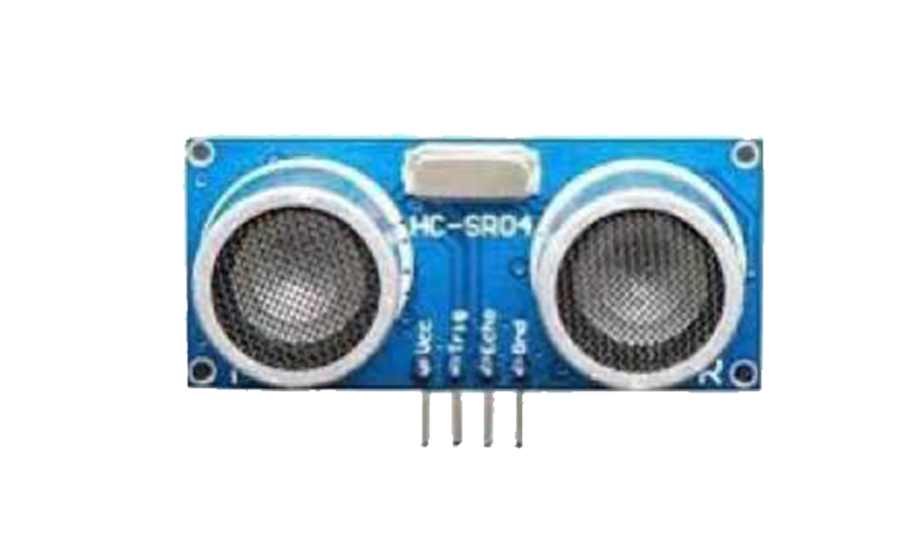

Fuel Monitoring
allows fleet manager or machinery supervisor to: measure precise volumes of fuel tank refill;
Detect fuel siphoning from fuel tank; Prevent fuel theft from tank.
Capacitive fuel level sensor
- The liquid level signal output can then be utilised
by other instrumentation to display, monitor or control the liquid level.

Ultra sonic sensor
- This device measures the distance to the target by measuring the time between the emission and reception of fuel.
Lv-can200
- This device helps to identify areas of improvement in the
vehicle operation to drive down overheads and minimize environmental impact.
All-can300
- This device is used to listening data from any type of transport:
light vehicles, Trucks, busses, agriculture and other special transport.
UM777
- Connected with ultrasonic fuel sensor, it can monitor accurate fuel consumption
with Time, Address and Fuel amount displayed on web tracking software.
Escort TD-150
- This device is a high precision capacitive fuel level sensors (FLS), designed to monitor the fuel consumption,
loadings, offloadings and thefts on all types of vehicles, including agricultural,
construction, mining and other machinery as well as stationary deposits, tanks, generators, etc.